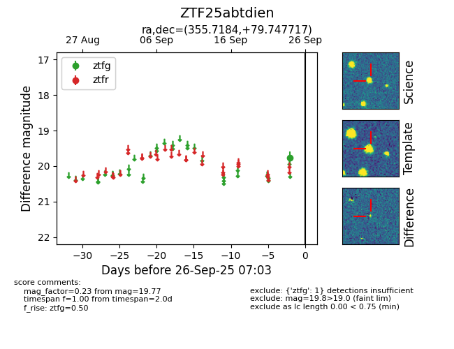

FINK: ZTF25abtdien
Lasair: ZTF25abtdien
ALeRCE: ZTF25abtdien
ZTF25abtdien (ztf,fink)
equatorial (ra, dec) = (355.7184,+79.74772)
galactic (l, b) = (119.7825,+17.29772)

last ztfg=19.77
1 ztfg detections